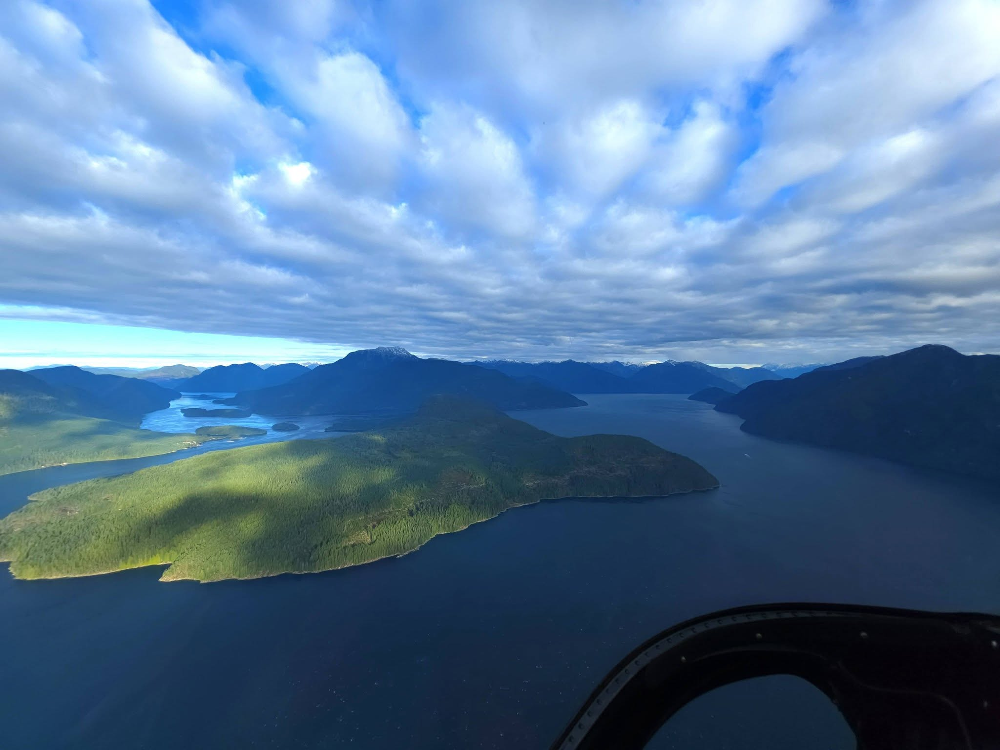

Guarding Our Territory & Tradition
The Homalco Aboriginal Guardians combine traditional knowledge with modern technology to monitor ecosystems, conduct marine surveys, safeguard cultural heritage, and uphold our stewardship responsibilities across Homalco Traditional Territory and Bute Inlet.
View Active Initiatives Report an ObservationGallery
Here is a small gallery of photos by Michael Paul-Yaniz, featuring aerial views of Bute Inlet alongside underwater Remotely Operated Vehicle (ROV) survey imagery of glass sea sponge reefs around Breton Island and South Reed.



Photo from: Michael Paul-Yaniz
Stewardship Focus Areas
Marine & Fisheries Operations
Marine & Fisheries Operations: Monitoring salmon escapement, conducting underwater ROV surveys of glass sponge reefs, and maintaining seasonal marine vessel patrols throughout Bute Inlet.
Land & Wildlife Protection
Land & Wildlife Protection: Conducting habitat assessments, stream surveys, and land monitoring to protect native species, watersheds, and ecosystems across traditional territory.
Cultural & Heritage Preservation
Cultural & Heritage Preservation: Cataloging Culturally Modified Trees (CMTs), historical village sites, and ancient heritage places to preserve Indigenous cultural history for community members.
Learn more about regional First Nations stewardship from the official website of the Government of British Columbia.
Have an environmental observation or report?
Reach out to the Guardian team to report wildlife sightings, ecosystem changes, or general community inquiries.
Get in Touch